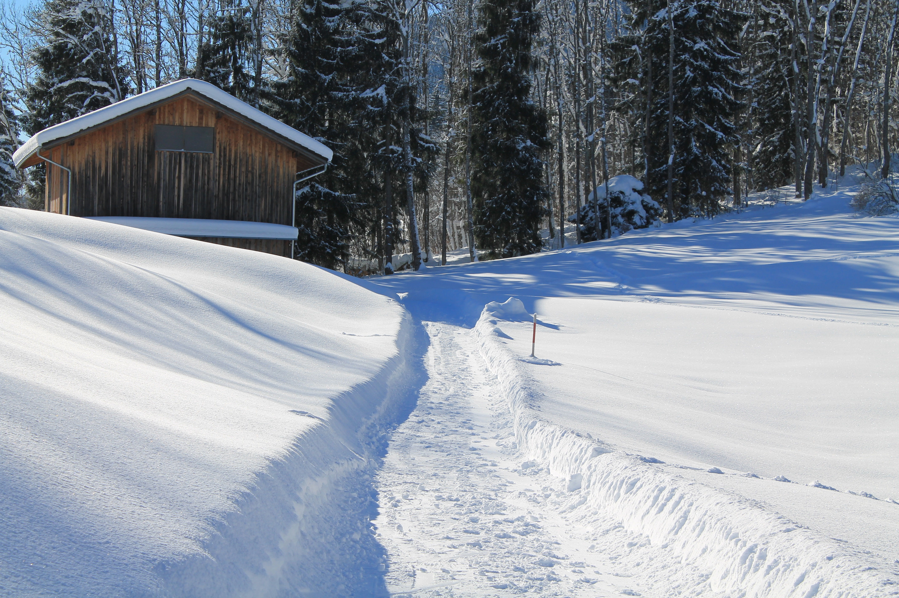
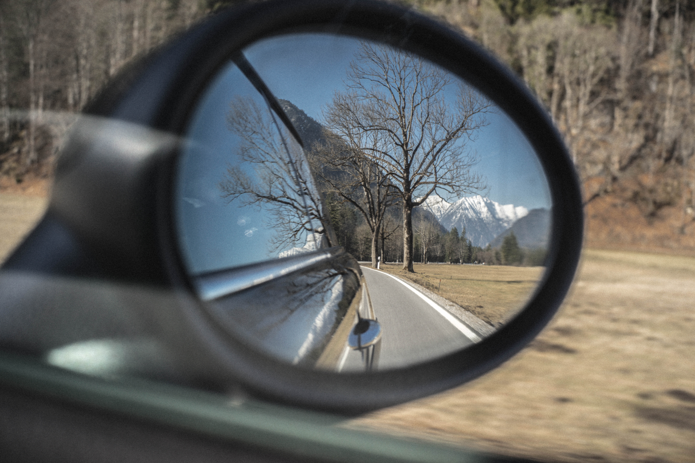

Some random photos from free photo stocks Published 18.07.2017 Reuniting with nature... Learning addiction... Programmer's style. Park's calm. Programmer's are complaining. Autumn's near. Winter's night.  Our beautiful winter. Beautiful Switzerland.  Looking back sometimes is so useful...